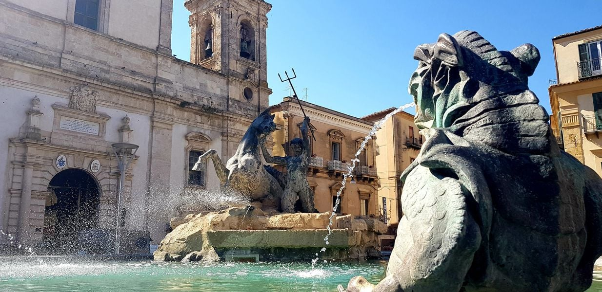

Piazza Garibaldi a Caltanissetta

La sua storia
Piazza Garibaldi è nata storicamente come "piazza di mercato", situata all'intersezione tra le direttrici che collegavano l'entroterra ai porti della costa. Durante il dominio dei Moncada, la piazza era lo spazio dove si radunava la popolazione per le grida pubbliche e le feste religiose. Nell'Ottocento, con l'esplosione dell'industria mineraria dello zolfo, Caltanissetta divenne una "piccola capitale" economica e la piazza fu ridisegnata per riflettere questo nuovo benessere. Il Palazzo del Carmine, originariamente un monastero, fu convertito in sede municipale, e la piazza fu pavimentata con materiali nobili. La Fontana del Tritone, pur essendo un'opera del XX secolo, racconta la storia del riscatto della città: rappresenta un tritone che doma un mostro marino, simbolo del dominio dell'uomo sulle forze della natura, un tema molto caro a una comunità che traeva la propria ricchezza dalle viscere della terra (le miniere) e che aspirava a un decoro urbano pari a quello di Palermo o Napoli.

Elemento d'arredo
Fontana del Tritone (1956)
Dimensione
3.500 mq